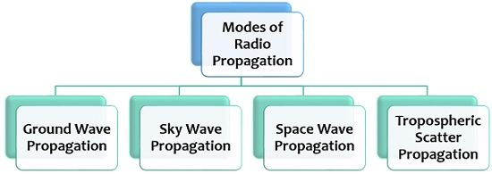
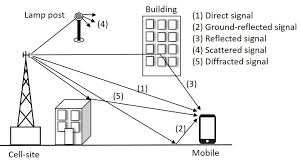

📡 Signal Propagation
🌐 1. What is Signal Propagation?
Signal propagation refers to how signals (electromagnetic waves) travel through a transmission medium. Depending on the environment and frequency, signal behavior varies drastically, especially in wireless systems.
🔀 2. Types of Propagation
- Line-of-Sight (LOS): Direct path between transmitter and receiver, used in microwave and satellite communication.
- Ground Wave: Travels along the Earth's surface. Used for low-frequency (LF) radio.
- Sky Wave: Reflected by the ionosphere, used for long-distance HF radio communication.
- Tropospheric Scatter: Scatters through troposphere irregularities, usable beyond LOS range.

📉 3. Free Space Path Loss (FSPL)
When signals travel in free space, they experience attenuation with distance:
FSPL (dB) = 20 log10(d) + 20 log10(f) + 32.45
- d: Distance (km)
- f: Frequency (MHz)
Example: A 2.4 GHz signal over 2 km → FSPL = 20log₁₀(2) + 20log₁₀(2400) + 32.45 ≈ 100.04 dB
🎯 4. Fading Effects
- Flat Fading: Affects entire bandwidth uniformly. Usually caused by multipath interference.
- Frequency-Selective Fading: Different frequencies are affected differently due to delay spread.
- Fast Fading: Rapid variations due to user motion (e.g., in cars).
- Slow Fading: Caused by large obstacles like buildings or terrain.
📶 5. Multipath Propagation
Occurs when a signal takes multiple paths to reach the receiver — reflected, refracted, or diffracted. Leads to:
- Constructive Interference: Signals add up, increasing strength.
- Destructive Interference: Signals cancel out → fading or nulls.

Multipath propagation: A major cause of distortion in mobile networks.
💥 6. Noise in Communication
- Thermal Noise (White Noise): Due to electron motion — power ∝ bandwidth.
- Intermodulation: Nonlinear mixing of multiple signals.
- Crosstalk: Signal leakage from adjacent channels.
- Impulse Noise: Sudden, high-energy bursts from switching devices, lightning, etc.
🌀 7. Animation: Multipath Fading Simulation
This simulates multipath fading — multiple signals arriving at different phases.
📚 8. Key Formulas
- Received Power (Friis):
Pr = Pt Gt Gr λ² / ((4πd)²)
- FSPL:
FSPL = (4πd / λ)²
- Thermal Noise Power:
N = kTB
Where:
- k: Boltzmann's constant (1.38×10⁻²³ J/K)
- T: Temperature in Kelvin
- B: Bandwidth in Hz
🧪 9. Quiz Yourself
Q1: What is the main cause of fast fading?
Answer: Movement of transmitter/receiver causing rapid channel changes
Q2: What is thermal noise proportional to?
Answer: Bandwidth (B)
Q3: Which type of fading affects specific frequencies?
Answer: Frequency-Selective Fading